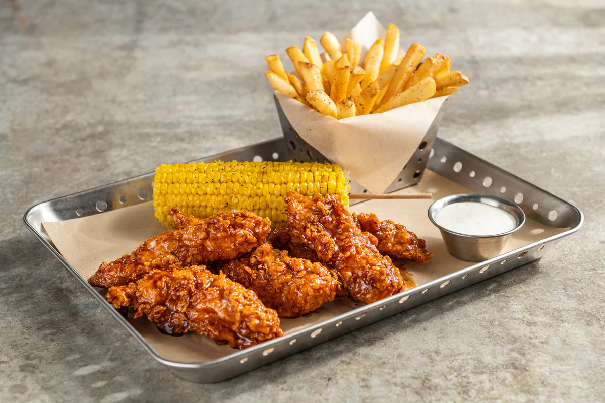

Honey Chipotle Chicken Crispers (Copycat)

The delcious taste of Chilies that has me craving it
more often than not served from the convienence and cost effectiveness
of your home, minus the corn and fries.
Reference Recipe
Ingredients
Chipotle Sauce
- 2/3 cup honey
- 1/4 cup water
- 1/4 cup ketchup
- 1 tablespoon white vinegar
- 2 tsp ground chipotle chile pepper powder
- 1/2 teaspoon salt
- 2 tbsp hot sauce
Batter
- 3 chicken breast
- 1 eggs beaten
- 1/2 cup milk
- 1/2 cup chicken broth
- 1 1/2 tsp salt
- 1/4 tsp black pepper
- 1/4 tsp paprika
- 1/4 tsp garlic powder
- 3/4 cup all-purpose flour
Breading
- 1 1/2 cups all-purpose flour
- 1 1/2 tsp salt
- 3/4 tsp paprika
- 1/2 tsp black pepper
- 1/2 tsp garlic powder
Instructions
-
Make honey-chipotle sauce by combining all ingredients in a
small saucepan over medium heat until boiling. Reduce heat
and simmer for 2 minutes, then remove from heat.
-
Heat the Canola oil in the fryer to 350F. Whisk together all batter
ingredients besides the flour. After combined add the flour incrementally.
-
Combine all breading ingredients and a large shallow pan or dish.
-
To fry the chicken, dip the chicken into the batter, remove (letting some excess drip off)
then toss it into the dry breading coating completely. Then drop the breaded chicken into
the hot oil and fry for 4 minutes, or until golden brown. Remove chicken from oil
and allow to drain on paper towels. When all the chicken tenders are done, drop
them into a large glass or metal bowl. Pour the sauce over the top, and toss gently
until all the chicken tenders are coated with the sauce.